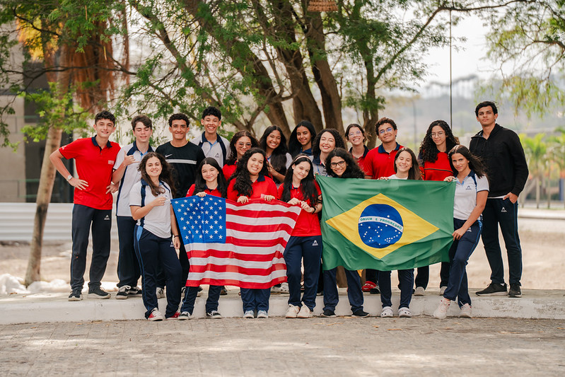
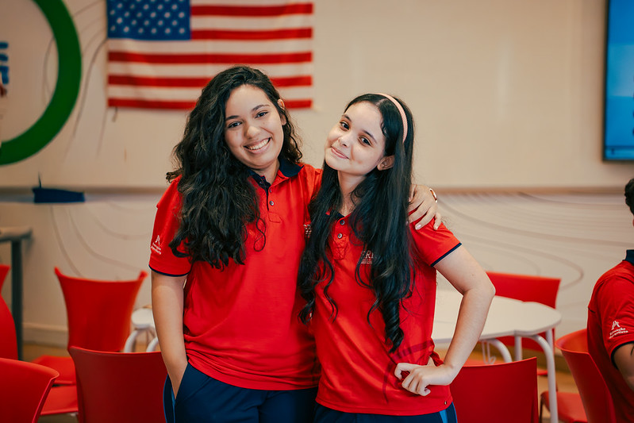

A Griggs é reconhecida por seu programa de High School com dupla certificação, permitindo que alunos da rede adventista obtenham um diploma americano integrado ao currículo nacional.


DA GRIGGS INTERNATIONAL ACADEMY
Reconhecida pela MSA-CESS e pela Associação de Acreditamento da Educação Adventista.
Programa que permite alunos brasileiros cursarem disciplinas americanas.
Aprendizagem online com currículo guiado e desenvolvimento de caráter.
Conectada à Andrews University e à Rede Adventista.
Inglês avançado e diploma aceito internacionalmente.